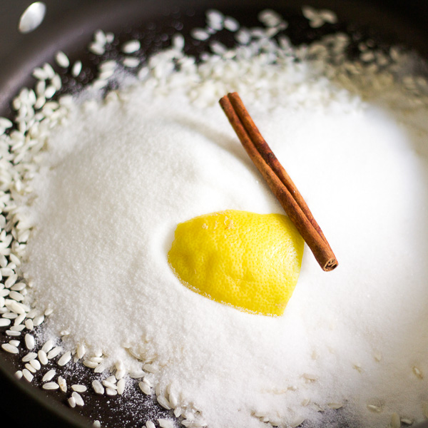

Rizogalo (pronounced REEzo-ga-low) is a popular desert and treat in Greek homes.
Description
Homely, comforting and extra creamy! Find out how to make the perfect Greek rice
pudding with this traditional, egg and butter free recipe, flavored with with
vanilla, lemon peel or orange zest and garnished with fragrant cinnamon!
Ingredients
100g Arborio rice (3.5 0z.)
1200ml whole milk
60g sugar (2 oz.)
1/2 tsp vanilla extract
zest of an orange or lemon peel, optional

Steps
Heat the milk and rice in a large heavy bottomed saucepan. Simmer over medium heat, stirring constantly, until it comes to just below boiling point. Reduce the heat to medium-low and gently cook, stirring occasionally, for 30-40 minutes until the pudding is thick and the rice is tender. (If you like to add some extra flavour to your Greek rice pudding, add some lemon peel or orange zest)
Note: it is very important to simmer at low temperatures and to stir the mixture, so that the milk doesn’t burn and the rizogalo doesn’t stick on the bottom of the pan.
Remove the pan from the stove and add the sugar and the vanilla extract, stirring, until the sugar dissolves. (If the rizogalo needs to thicken a little bit more, dilute 1 tsp cornstarch in some water, add in the mixture and cook for a few more minutes.)
If you don’t serve the Greek rice pudding right away, it will form a crust. A little trick to avoid that is to pour the mixture in a large bowl and place over a bowl filled with ice cubes. Then stir the mixture until cold. Spoon the rizogalo into individual bowls and store in the fridge.
Serve this traditional Greek rice pudding as a delicious dessert or mid-day snack with a sprinkle of cinnamon. Enjoy!